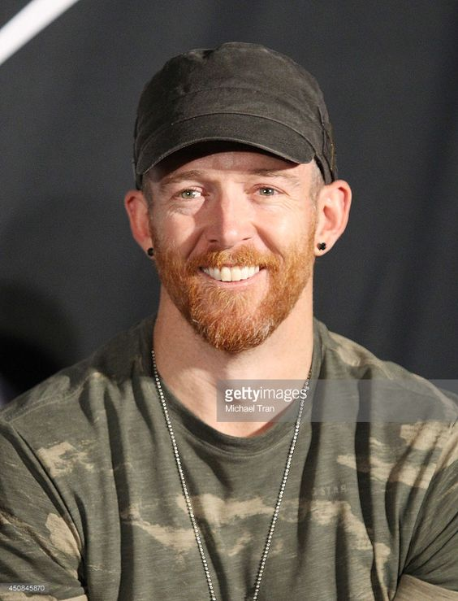
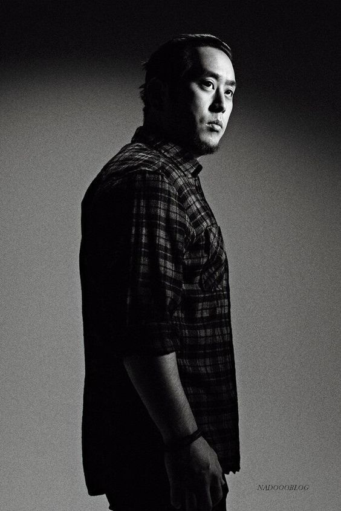
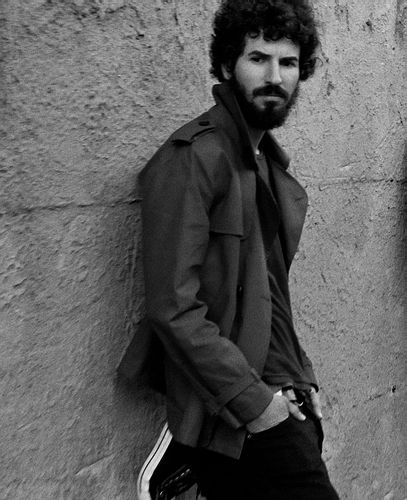

Members
Chester Bennington
1976-2017
Chester Charles Bennington was an American singer, songwriter, musician, and actor. He was best known as the lead vocalist for Linkin Park and was also lead vocalist for the bands Dead by Sunrise, Stone Temple Pilots, and Grey Daze. He also appeared in films such as Crank, Crank: High Voltage, and Saw 3D. Bennington first gained prominence as a vocalist following the release of Linkin Park's debut album Hybrid Theory (2000), which was a worldwide commercial success. The album was certified Diamond by the Recording Industry Association of America in 2005, making it the best-selling debut album of the decade, as well as one of the few albums ever to achieve that many sales. Linkin Park's following studio albums, from Meteora (2003) to One More Light (2017), continued the band's success. Bennington formed his own band, Dead by Sunrise, as a side project in 2005. The band's debut album, Out of Ashes, was released on October 13, 2009. He became the lead singer of Stone Temple Pilots in 2013 to release the extended play record High Rise on October 8, 2013, via their own record label, Play Pen, but left in 2015 to focus solely on Linkin Park. On July 20, 2017, Bennington was found dead at his home in Palos Verdes Estates, California. His death was ruled a suicide by hanging.
Michael Kenji Shinoda is an American musician, singer, songwriter, rapper, record producer, and graphic designer. He co-founded Linkin Park in 1996 and is the band's rhythm guitarist, primary songwriter, keyboardist, producer, and co-lead vocalist. Shinoda later created a hip-hop-driven side project, Fort Minor, in 2004. He has also served as a producer for tracks and albums by Lupe Fiasco, Styles of Beyond and the X-Ecutioners. Born in Panorama City, California and raised in Agoura Hills, Shinoda formed Xero, which later became Linkin Park, with two of his high school friends: Brad Delson and Rob Bourdon in 1996, later joined by Joe Hahn, Dave Farrell and Mark Wakefield. Chester Bennington replaced Wakefield as the lead vocalist. The band later signed a record deal with Warner Bros Records. Shinoda is also the co-founder of Machine Shop Records, a California-based record label. Outside of music, Shinoda is an artist and graphic designer. He has painted several pieces of artwork, some of which have been featured in the Japanese American National Museum. On January 25, 2018, Shinoda released the Post Traumatic EP, which contained three songs about his own feelings at the aftermath of Chester Bennington's death on July 20, 2017.

David "Phoenix" Farell is an American musician, best known as the bassist and backing vocalist of the rock band Linkin Park.[2] He was also a member of Tasty Snax, a Christian rock and ska band. Farrell joined Xero, the earliest incarnation of Linkin Park, after meeting Brad Delson at UCLA. He contributed to the band's self-titled demo tape in 1997, but left the project to tour with Tasty Snax. Farrell's void was temporally filled by Delson, Ian Hornbeck, and Scott Koziol, who all contributed to Hybrid Theory, Linkin Parks debut album. Farrell returned to the Linkin Park in 2000 after a year-long absence. Linkin Park's future has been uncertain since the death of lead vocalist Chester Bennington on July 20, 2017.

Joseph Hahn is an American musician, DJ, director and visual artist. He is best known as the DJ of the American rock band Linkin Park, doing the scratching, turntables, sampling, and programming for all seven of Linkin Park's albums. Hahn, along with bandmate Mike Shinoda, are responsible for most of Linkin Park's album artwork. Hahn began deejaying in high school, and he studied illustration at the Art Center College of Design in Pasadena, California. In college, he met Mike Shinoda and joined his band Xero, which later became known as Hybrid Theory in 1999 with the EP release of the same name as the band, then was changed again into Linkin Park during the recording sessions of Hybrid Theory. Hahn and Shinoda guested in The X-Ecutioners' hit single "It's Goin' Down". Hahn also guest starred in Shinoda's Fort Minor's debut album The Rising Tied on the song "Slip Out the Back".

Brad Delson is an American musician and record producer, best known as the lead guitarist and one of the founding members of the American rock band Linkin Park. After graduating summa cum laude and Phi Beta Kappa from UCLA in 1999, Delson decided to forgo law school in order to pursue a musical career with Linkin Park. In 1999, Delson's band, Xero, replaced former lead vocalist Mark Wakefield with Arizona native Chester Bennington and renamed themselves Hybrid Theory. Before long, Delson, along with Shinoda, had produced the six-track EP of the same name as the band, distributing it to various websites online and earning the band its own cult following. By 2000, after one more band name change, Linkin Park was signed by Warner Bros. Records.